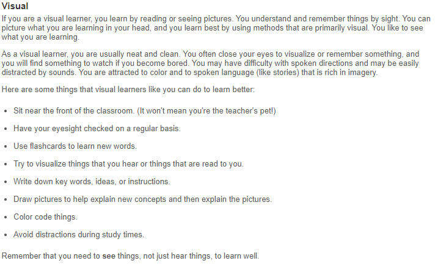

Personal Information
Hello world, my name is Trent Wilson. I am twenty-four years of age and I live in Brisbane, Australia. Born and raised, I recognize as Australian as do my great grandparents on my mothers’ side. My father was adopted at birth and we have never known what his true nationality or culture was. However, my sister did a DNA test which stated our bloodline is placed somewhere within the far Eastern Europe/Middle Eastern region.
I speak fluent English and for some time have been learning Vietnamese as my partner was born and raised in Vietnam before she moved to Australia in 2009. We are the proud parents of four dogs: Aston (Labrador), Cosmo (Breed), Ollie (Breed) and Maxi (Breed). They are a handful, and they all have extremely differing personalities which makes it interesting and funny at times.
Attending a Melbourne based University, I feel at ease sharing the fact that I played AFL for Queensland for two years. Although we got our behinds handed to us by Victoria, it was an awesome experience and a proud pastime of mine.
I also have a hobby, or obsession rather; it is self-taught (over quite some time) and that is application prototyping. I must have pressed every feature at least ten times each before feeling comfortable with Adobe XD. I wish to execute an App idea. The mission when I started learning Adobe XD was to flesh out my idea so I could visualise it on the screen. Realising I could not do much else with my idea, without raising funds, I started researching how to build a mobile application, and this is how my interest in IT began.
Interest in IT

What is your interest in IT? How and when did it start?
My interest in IT is primarily for software and web development and a secondary interest for me is in Virtual and Augmented Reality (VR/AR). As this course and others continue, I may wish to extend my knowledge to that of a software engineer, as that seems like (to me) a challenging role. My interest in IT started relatively obnoxiously, I took technology for granted and could not grasp the depth and complexity of this ever-evolving field. I studied two years of electrical engineering before realising this wasn’t where my heart was.
I was full of App ideas and had no idea how to build an App let alone start one. I did some researching and discovered Adobe XD, an App prototyping software. I felt eager to build my idea out until the user interface opened and once again, I felt lost. I spent weeks learning what each feature does and how it interacts with other components. After months of progress I successfully prototyped my App idea. I took my prototype to two App developing agencies who both quoted me two hundred and fifty thousand dollars ($250,000) to construct my App. I went away gobsmacked and researched how to build it myself, as I was certain anyone could learn (with the right guidance and patients) how to programme an App.
This is where my interest in IT had peaked or, levelled-up. I studied Code Academy for a little while I believe and that is when my search engine offered me the elegant, yet effective; RMIT Online ad for Information Technology. Did I choose RMIT, or did RMIT choose me?
Why did you choose RMIT?
It may seem controversial at this stage, but I can confirm that I did indeed choose RMIT. A few years back my brother was offered a job in Melbourne and decided to take it. He was doing well down there and offered for me to come live with him. I was excited by the idea of moving to a different state which began my research into universities in Melbourne. I had chosen RMIT to study Engineering as I was really drawn to the campus and what the course had to offer. Right as the time came to prepare my application, my brother announced that his wife was pregnant, and they would be returning home for family support later that year. I was saddened by this news; however, it turns out Engineering was not for me and now I am excited to have the opportunity to study with RMIT after-all.
What do you expect to learn during your studies?
I have given myself a lot of expectations on what I need to learn from this degree to be successful in my career.
I expect myself to learn how to programme, which to me will include the foundational knowledge of coding itself (HTML, CSS and JavaScript) as this will support my journey into other programming languages. I also expect to learn version control systems (VCS), hosting services as well as the ethical and legal practices when approaching different projects. I expect to learn about UI/UX design and all that it covers so that I can design and develop software that has been produced through communication and testing with users themselves. To learn the patterns and psychology of potential users could be a huge advantage and I wish to learn how to get that information appropriately too. I do expect myself to learn the core of back-end development and I wish to expand on this area during my progression through this degree, as I do not have the slightest clue as to where to start. I would be eager to learn how servers and systems/platforms relay information and how that can be utilised with software development. I believe throughout my studies, I expect to learn how to communicate with others effectively, how to write and present professionally and how to deal with conflict in my future teams/workplaces.
I strongly believe these skills will allow me to construct my ideal job of building an App and running a company.
Ideal Job
Job advertisement snapshot
Ideally, I want to programme my own mobile application and run a company and for that reason I have chosen to create my own job advertisement. I thought this is a great exercise to print out and to put on my wall, my dream job. I utilised Adobe XD to create a mock-up of a generic online employment service. Initially I thought this exercise would be easy, but I was taken aback to think how complex and ‘out of reach’ my dream job is to me at this point in time. Above is a picture of the job advertisement itself
Job Description
To be the Chief Executive Officer of my own company does not mean I will pick and choose all the decisions myself. The position will be responsible for assessing, managing and collaborating on executive decisions in-hand with board members and corporate operation teams. Therefore, this role will require high level inter-personal communication and presentation skills and an outstanding attention to detail. The nature of the company (tech industry) will require me to be proficient in the understanding of technologies used to create, develop and maintain the business. It is imperative I have a degree in Information Technology with a heavy emphasis on programming and software development. Overseeing executive business decisions will require me to be client and partner astute. A key focus in User Centred Design would be desired as it will enhance my ability to understand all user feedback and conflict mitigation – whether that be from stakeholders of users themselves. This would allow openness and transparency within the business as this will be a goal for the future company. The position will require countless sleepless nights, a determination to win, a never-give-up attitude, performing under stress and perfect negotiation/social skills.
Whi is this job so appealing?
The task of creating employment from what was once an idea is extremely compelling for me. I have long disappointed myself and have fallen short of my past goals and ambitions. For context, throughout year eleven, twelve and the year after; I was preparing to attend the Australian Defence Force Academy (ADFA) as a fighter pilot. They had to watch my height as I was still growing and if I went over one-eighty centimetres, then I would become a safety hazard. I continued and completed my flight screening and Officer Selection Board in Canberra with a successful outcome. Closer to the date I had another medical and was deemed too tall to fly any fighter aircraft. I was shattered but was offered to apply again with my existing results into an aeronautical engineering role. Each year they take three-hundred and thirty students (one-hundred and ten per discipline – Air Force, Army, Navy). My letter came in the mail five days before I was meant to be leaving to study, stating I positioned as candidate three hundred and thirty-one. I missed out by one spot. Still to this day, my mother says I am not the same person I was before that letter arrived. I have been trialling and failing most attempts at breaking this resentment and self-hatred and finally once I started working at my own App idea, the spark feels as if has been ignited once again. I have this burning desire to make this idea succeed; to prove everyone around me that I finally made something of and for myself. I know I cannot make this journey alone, but I wish to be responsible for setting the foundation and being a part of something great.
What are the required skills, qualifications and experience for this role?
There will be four core areas that will required to meet the expectations of this position. Each component is notes differing skills, qualifications and experience throughout their descriptions. The four core areas are:
Communication
- High level communication skills are critical.
- Industry knowledge is paramount to the overall success of the business.
- Have strong experience liaising and engaging with external partners and stakeholders.
- Extensive experience managing multiple high performing teams.
Business
- A legal and ethical approach to all business-related decisions.
- A strong proven record of leadership within teams and businesses.
- Extensive experience in financial services and technology.
- Experience with legalities, national governance and work practices (Fair-work, ASIC, Tax etc.).
- Managing multiple tasks, people and deadlines is critical.
Technology
- A strong knowledge of Python, Node.JS, Java and .Net. Preferably a Bachelor of IT or Software Engineering is required.
- Experience working with API’s to achieve scalability.
- Technologically agnostic in approaching new technology.
- Logical and data-driven approach to problem solving.
- Experience with distributed systems architecture.
Client focused
- Users, clients and partners remain a top priority.
- An open and transparent approach to all business aspects.
- Experience with User Centred Design is highly desirable.
- Experience addressing and mitigating feedback from all stakeholders.
- Experience with pivotal decision making and evolving with technology is a must.
What are your personal skills, qualifications and experiences?
I believe I host the core experiences and skills of someone who would be likely to evolve into this position over time. Although I am not currently qualified to be considered for this role, I am conscious that with every subject I learn from this degree will land me closer towards my goal.
Through my schooling and ADFA experience, I have been exposed to high level (and high-ranking) communication and presentation skills. It is through ADFA I realised my logical and data-driven approach to situations. Flight screening provided me the opportunity to make critical decisions based upon the data present. Initially it started with calculating how much fuel to dump before making a safe landing, and then evolved into combat scenarios which proved to be stressful even for a simulator. The outcome of each flight was heavily reliant on data. Passing the flight screening and ADFA application is an experience I believe would be advantageous to my ideal job. This can be applied to making critical technological and business-related decisions which need to be based off logical thinking and data.
One of my previous employment has shown me what not to do when it comes to appeasing clients, and another has shown me how to achieve the opposite, however at the employees’ expense. I feel inclined to ensure our clients have a smooth and positive experience, as I understand their importance on overall business success. I also know what it has been like on the bottom of the hierarchy and recognise that all employees should be considered invaluable assets. I believe these experiences helped shape my approach to leadership.
Within my last two positions, I have learnt that communication is imperative to all aspects of business. In one role, I was responsible for restocking commercial international aircraft, which requires us to meet time critical deadlines, liaise with cabin crew and work in and around tight spaces. In the other role, I was responsible for all warehouse duties, I ran their secondary website and ecommerce platform, and worked as an electrical/mechanical technician for an automatic gate business. I had to liaise with my two bosses, two managers, sales, the scheduling team, clients, online and in-field customers, and reception to ensure all stakeholders received a positive experience. Although it was highly stressful, and could have been a more positive experience, it was an experience nonetheless that I believe was necessary for me to learn.
Although I don’t have the qualification or skills yet to be able to hold my ideal position, I believe I have a strong foundation built from my experiences to be able to acquire the necessary qualifications and skills throughout this degree. I am to further increase my programming and technical knowledge through additional learning resources such as Code Academy and W3Schools. Thus far, I am confident I am on the correct pathway to my ideal job.
What is your plan to achieving this goal?
According to the specialist employment service Fircroft (How to set a career plan, 11/2019), there are four steps to set a career plan and secure your ideal job. Those four steps are: Identifying the end goal, self-assess, identifying your next steps and to lay a five year plan.
Achieving my ideal job of becoming the CEO of my own company is extremely ambitious, however not unattainable. The mindset required on this journey is to be incredibly realistic, to remained focused on and aware of, the end goal. Constantly looking for examples of people already at that level, researching emerging technologies and identifying what is and is not working within my industry. This will give me great insight of what is could be like and grant me long term vision on my set goal.
It should be highlighted that self-assessment is the key to achieving my end goal. To be constantly aware of my soft and hard skills is imperative in knowing where I am. Identifying my next steps is important in making sure I am focused in the right direction, Once I know who I am and where to go next, the journey to achieving my goals will be significantly less turbulent; although never easy.
Laying out a five-year plan is envisioning the next steps after you achieve a small milestone. I need to know what I am to do after I learn a programming language, or after I get my degree. I think the message with setting up a five-year plan is to always be learning, to have a plan B and C, and to be conscious of where I am in the moment.
If I remain focused on my end goal, and milestones; if I am aware of where I am and where I need to head next, then there is no doubt in my mind I will achieve my end goal.
Personal Profile
I undertook three tests which examined my personality, learning style and my core values. The three tests (in-order) were: 16Personalities, Education Planner.org’s Learning style test and Values Centre’s Personal Values Assessment. I believe this exercise to be a part of identifying who I am currently and how to approach the next steps in my career journey. For the 16Personalities test, I identified as a Logician. For the learning style I am: Tactile/Visual learning and for my core values I regard ‘meaning’ with the utmost importance. I am satisfied with all my results and from past tests like these (after ADFA), have scored the same or similarly.
What do these results mean for you?
These test results solidify my confidence in who I am as a person. They state that I am a logical, hands on thinker in search of meaning, or belonging, which even I think is evident throughout this report. To be a Logician is rare, making up only three percent of the population is something I loved reading. Logicians pride themselves on inventiveness and creativity, which I relate to in the making my own job listing. I rather enjoy my fellow logician, Albert Einstein’s quote “Learn from yesterday, live for today and hope for tomorrow. The important thing is not to stop questioning.”. My tactile/visual learning style was clear to me throughout this report as I needed to visualise and examine what was going on. From Adobe XD to Atom and GitHub, I needed to visualise and confirm what I was doing was correct. My values state I find meaning important, to me this is true, as meaning is either everything or nothing. I feel I do not have time for pointless interactions or tasks, I would rather get to the point and work on what truly matters to me. I can see how others could find this as obnoxious or off-putting, however once a connection has sparked, I think people will be able to see I can be of value, and do not have to worry about ulterior motives or power games.

How do these results influence your behaviour in a team?
I feel within a group setting, my team need not fear or doubt my ability to deliver. I may need to ask questions or do tasks myself to truly grasp my understanding, but there is no need for concern as this is just a part of my learning style. I like to get to the point of tasks, which almost eliminates any threat of conflict on my part. There may be times of disagreement, however my logical self knows that conflict is not viable when seeking a solution. I hold true to my core value of meaning, which to me relates to making something of our team, getting the result.
How Should you take this into account when forming teams?
As a Logician, I agree with the statement that we desire solidarity, intellectual stimulation and the satisfaction of the final piece of a puzzle clicking into place. Although Logicians tend to work best in pairs, I can confirm I am always in my head thinking of another angle or take on a problem set. I believe I should join a group of mostly analytical personality types, and those that have a visual or tactile learning styles. If I am stuck and someone shows me how they solved a problem, it will be engraved into my memory as the methods they would use are like my own.
Project
While You’re Out is a hyper-local courier/delivery service mobile application on the brink of disrupting the way we transport and deliver goods within metro areas. The whole concept is based around “Why not let someone who is already out, bring you what you want?”. While You’re Out aims to repair the link between traditional brick and mortar stores and consumers, which has been under threat since the rise of e-commerce. The way this link can be repaired is by bringing the brick and mortar stores to the consumers doorstep. While You’re Out can achieve this by working with three user groups. Local businesses, delivery drivers (or Drop Mates) and the last group is the consumer users.
Australia Post reported that in 2018, 73% of Australian households shopped online, an increase of 24.4% year on year (Australia Post, 2019). These statistics enforce the fact that Australians are more than comfortable purchasing online goods, knowing their goods must be passed through many hoops before arriving at their door.
Coles owner Wesfarmer reported that in 2018, there was a 30% increase in online sales for that year, resulting in one billion dollars of sales for that financial year. (Wesfarmer, 2019). In 2020, Coles admitted they cannot keep up with the delivery service demands, with users only being able to book a delivery up to four days in advance, and even then, not everyone is happy getting groceries delivered at 9pm on a weeknight (Coles, 2019). This statement shows there is an opportunity to be seized.
Uber announced in 2019 that “Six out of ten people consider restaurant delivery service apps to be normal these days, with two thirds of Australians opting for convenient food.” (Uber Eats Australia, 2019)
This statement proves Australians are becoming reliant on delivery services and are also becoming increasingly time poor. While You’re Out aims to disrupt this industry and allow users to get their goods the same day they order.
While You’re Out will be a mobile application marketplace for traditional brick and mortar stores. Consumer users will be able to select what they want and submit a request to the store. The delivery driver will be near-by the store and can search any orders in their area. The delivery driver can accept the job if they know they will be heading in the direction of the consumer to make the delivery. The store prepares the order, the delivery driver goes in to collect the goods, they will scan a QR code linked with that specific order and continue their journey towards their destination, only veering off slightly to make the delivery. The delivery driver gets a bit of pocket money for driving in the direction they were already going, the consumer gets same day delivery on their order and the local business can make a sale that may not have occurred without While You’re Out.
While You’re Out will need to host the marketplace of all goods available to the consumer. This is where consumer users will be able to look for items they wish to order and have delivered. They will be able to browse different categories of stores, add items to carts and view prices of items (and consumers will be able to ping shops to ensure they are in-stock of items before making an order).
Delivery drivers will have access to GPS and maps to see exactly where orders are being made, they will be able to open the anonymous order showcasing an approximate delivery range and what shop they would be collecting items for. If they choose to accept the order, both the consumer user and the delivery drivers’ details are shared between each other and communication services are offered to ensure the smoothest possible experience. The delivery driver will confirm when they are on their way and a GPS tracker will start until the delivery has been made.
Initially, While You’re Out will need to prove its value to the public. It needs to be safe, secure, monitored and delivery drivers will be required to be vetted. Therefore, While You’re Out will implement a review and rating scheme for all three user groups to maximise security.
The last feature category will be the transaction. When the store scans the QR code and the delivery driver collects the goods, the consumer user will be charged the amount of the goods + delivery fee + the service charge. While You’re Out will pay the store for the goods, and charge the consumer, holding the delivery fee until the delivery is made. If there is no delivery made, then the delivery driver is charged for the goods and the consumer will be reimbursed the total amount. This will prevent theft from occurring and ensure each link of the goods journey is covered.
These features are complex and will require the latest technology and tools to build and maintain. However, if While You’re Out can get it right, then it could revolutionise the way we transport goods forever.
While You’re Out will use the latest technology and tools available to create a quality mobile application. To create the mobile app itself, coding languages like Python and C++ need to be utilised, in unison with version control systems to ensure the project is in sync across all development stages. Within the coding itself we need to use the API’s of systems like Google Maps and the Stripe Payment platform. As information will be stored, sent and requested; While You’re Out will need impressive servers and infrastructure to be able to cope with all the data. Finally, the users will need to have a mobile device capable of the minimum requirements of running this app (which are currently unforeseen).
The technology is already out there, however my skills with building an app of this magnitude is no where close to the reality of what it would take. Therefore, I am acquiring the skills I believe will be necessary to developing this app, such as learning programming languages and how to communicate professionally. I am beginning to research what and how servers operate as this is an area, I have no idea about. This degree should shed light on this.
If While You’re Out becomes successful, the way we transport goods will be revolutionised. There are also many secondary benefits to achieving this goal to note: less traffic, greener for the environment, more money generated in the community and local businesses, less strain on traditional delivery methods and more time for the consumer user to focus on what truly matters to them. I believe While You’re Out can solve this problem and will aim to solve it within the next few years.